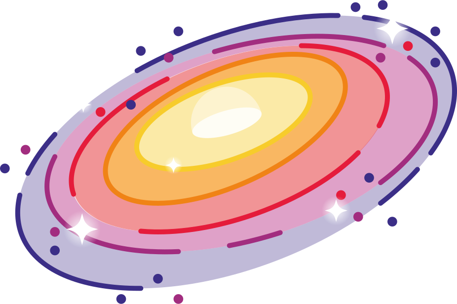

NEUTRON STARS
...One of the most extreme and violent things in the universe

...One of the most extreme and violent things in the universe
These stars are the ideal laboratories to test theories of dense matter, physics and general relativity, and are among the most amazing objects in the universe. Neutron stars owe their existence to the death of something majestic.
Already invested and interested? Or bored yet ready to learn something new? Then go ahead and dive into the fascination that are neutron stars.